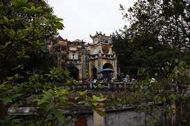
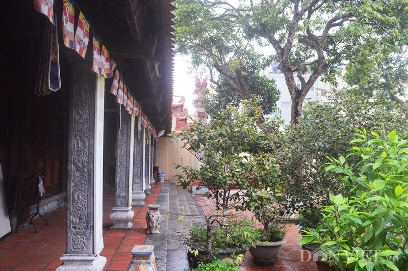

Nơi ghi dấu trận đánh oanh liệt năm xưa
Chùa Bộc do nằm ở vùng xảy ra trận Đống Đa lịch sử năm 1789, nên trong trận “Xuân lửa Đống Đa” tiêu diệt 29 vạn quân Thanh, chùa Bộc khi đó đã bị thiêu hủy hoàn toàn.
Cùng với 13 gò chôn xác quân Thanh như: gò Đống Đa, gò Trung Liệt, gò Đống Thiêng, gò Đầu Lâu, núi Cây Cờ, chùa Đồng Quang, Thanh Miếu... Chùa Bộc là một di tích lịch sử ghi dấu chiến công oanh liệt của nghĩa quân Tây Sơn đánh bại quân xâm lược Mãn Thanh vào Tết Kỷ Dậu 1789.

